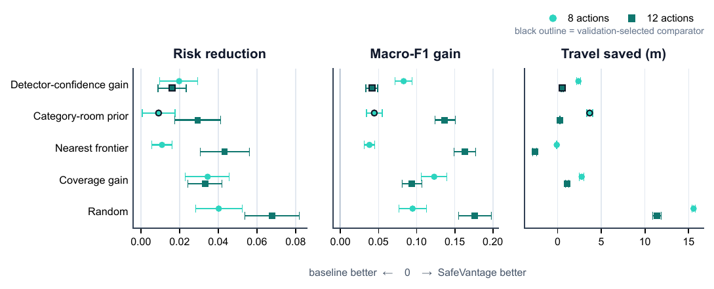
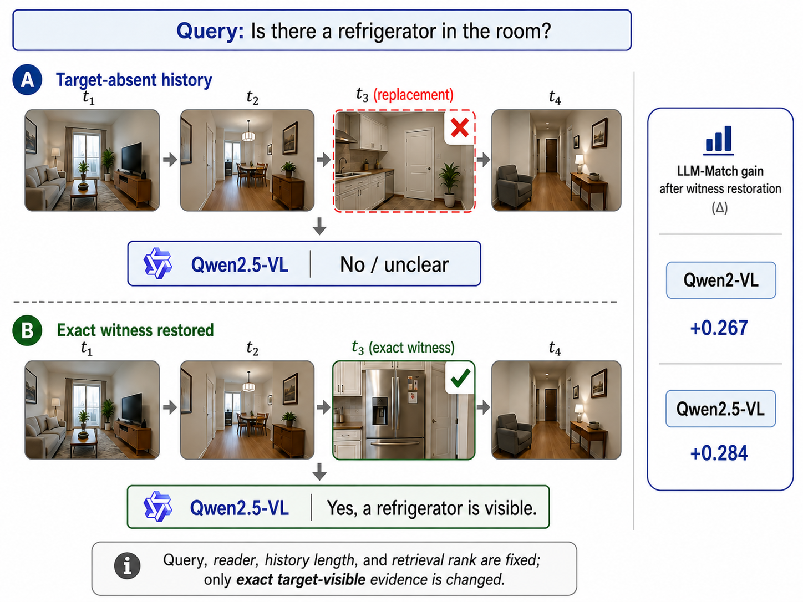

Embodied agents must decide both where to look and when the evidence warrants a decision. SafeVantage is a semantic memory and active-perception policy that records the views supporting each claim. The policy uses this evidence state to select corroborating views and to output Yes, No, or Wait. On a held-out ProcTHOR test spanning 232 unseen houses and 7,424 paired episodes per method and action budget, SafeVantage raises macro-F1 from 0.4845 to 0.5289 and reduces travel from 7.23 to 3.56 m at eight actions, while risk falls from 0.3964 to 0.3872. At twelve actions, macro-F1 rises from 0.5855 to 0.6270, risk falls from 0.3685 to 0.3523, and travel falls from 8.42 to 7.90 m.
On a separate 96-house cohort, removing supporting-view identity, target-ray alignment, and yaw diversity lowers macro-F1 by 4.35 points at eight actions and 1.15 at twelve. Equal-input HM3D comparisons show lower selective risk, and ScanNet interventions show that answer quality decreases when supporting views are removed and recovers when they are restored. Together, the results support vantage-aware memory as an interface between active perception and selective decision-making.
For each scene, SafeVantage captures posed observations containing RGB, optional depth, camera pose, and time. A semantic claim is represented by its supporting views, support count, and optional 3D target estimate. This record preserves which observations justify a claim and distinguishes one weak observation from a repeated spatial pattern.
The memory separates target visibility, property or relation sufficiency, search coverage, and answer correctness. Before a provisional detection, the policy balances spatial novelty, category-room evidence, and travel. After a detection, it seeks a corroborating view from a distinct position and uses the resulting evidence state for the final decision. The selective head emits Yes, No, or Wait under calibrated thresholds.

Held-out ProcTHOR performance
At eight actions, SafeVantage improves macro-F1 from 0.4845 to 0.5289, raises answer rate from 0.3772 to 0.4296, cuts travel from 7.23 to 3.56 m, and reduces mean risk from 0.3964 to 0.3872. At twelve actions, macro-F1 improves from 0.5855 to 0.6270 and risk falls from 0.3685 to 0.3523.




Equal-input HM3D experiments and ScanNet view-removal studies test the same representation outside ProcTHOR. The paper source package contains the complete methods, tables, bibliography, and figure files.
The complete paper source, tables, bibliography, and figures are included in the copied source package. The project repository is maintained under the SafeVantage organization.
For manuscripts, talks, and other work citing the current version, use:
Lewis, S. H., Guo, Z., Chen, B., Li, Z., Lin, H., & Huang, H. (2026).
SafeVantage: Vantage-Aware Memory for Reliable Embodied Decisions.
ICRA submission.
https://safevantage.github.io/